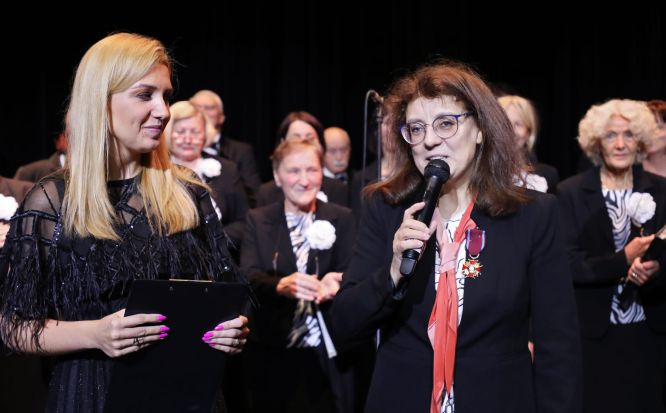
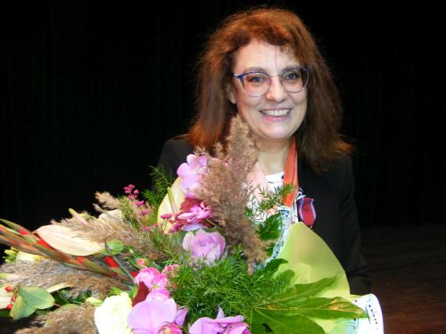
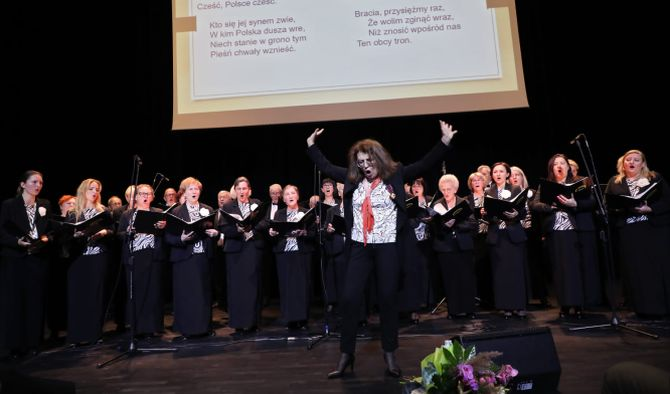
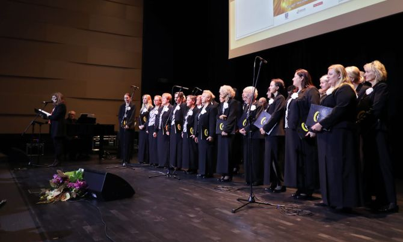
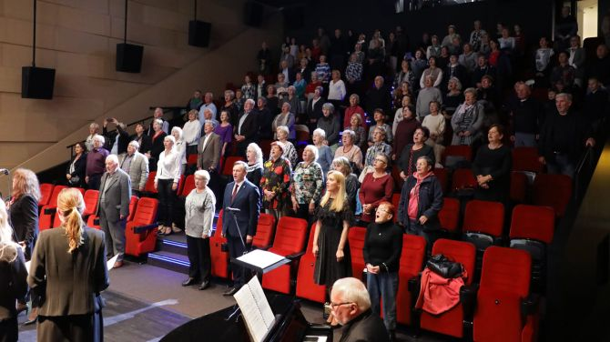

A tymczasem w Cameracie...
.
2022-09-23
„Camerata w roku polskiego romantyzmu” to kolejny koncert wpisany w obchody Jubileuszu 25–lecia działalności zespołu, wykonany 23 września 2022 r. w Wielickiej Mediatece. Wydarzenie rozpoczęło wręczenie Pani Izabeli Szocie Złotego Krzyża Zasługi, przyznanego przez Prezydenta RP Andrzeja Dudę w uznaniu Jej ogromnych zasług. Odznaczenie w imieniu Prezydenta RP wręczył Wicewojewoda Małopolski, Mateusz Małodziński. 
Narrację i repertuar perfekcyjnie przygotowała jak zwykle niezawodna nasza Pani Dyrygent, która porwała publiczność w świat romantyzmu, nawiązując do ogłoszonego Roku 2022 przez Sejm RP – Rokiem Polskiego Romantyzmu.
Powtarzając za Prezydentem RP Andrzejem Dudą:„Romantyzm to istota polskości i fundament nowoczesnej tożsamości naszego narodu. To epoka zmagań z zaborcą, utrwalona w biografii Adama Mickiewicza oraz tych wszystkich polskich patriotów, uczestników tajnych stowarzyszeń i powstań, działaczy emigracyjnych i spiskowców, którzy na różne sposoby, w kraju i na obczyźnie, czynem i słowem toczyli bój o suwerenną Rzeczpospolitą. Powstało wówczas głośne hasło „za naszą i waszą wolność”, które wciąż jest uniwersalnym zawołaniem narodów walczących o niepodległość … A kiedy Polski nie było na mapie Europy, to właśnie romantyzm uformował nasz patriotyzm, ocalił narodową tożsamość i duchowość, a także odkrył piękno naszej kultury ludowej.”

Dlatego z estrady zabrzmiały utwory naszych najwybitniejszych twórców, którzy swoją muzyką podtrzymywali na duchu zniewoloną Ojczyznę: pieśni ludowe, polonez i krakowiak z pierwszej opery narodowej „Cud mniemany, czyli Krakowiacy i Górala” Jana Stefaniego, przepełnionej elementami niepodległościowymi, utwory Stanisława Moniuszki, twórcy polskiej opery narodowej i pieśni artystycznej (mazur z opery Straszny dwór, Modlitwa w kościółku z opery Halka, Ojcze nasz, Pieśń wieczorna, Postój piękna gołąbeczko).
Silne poczucie patriotyzmu tak bardzo charakterystyczne dla epoki romantyzmu zainspirowało do wspólnego z publicznością zaśpiewania pieśni patriotycznych, które powstały i były niezwykle popularne już w okresie powstania listopadowego.

Koncert zwieńczyła Rota, do której tekst napisała Maria Konopnicka, również Patronka Roku 2022, obok Ignacego Łukasiewicza, Józefa Mackiewicza, Marii Grzegorzewskiej, Wandy Rutkiewicz i Józefa Rufina Wybickiego.

Tekst Lucyna Grochal i Izabela Szota

© Stowarzyszenie Muzyczne Chór Camerata Wieliczka
Prowadzenie strony oraz zdjęcia: Małgorzata Wysocka